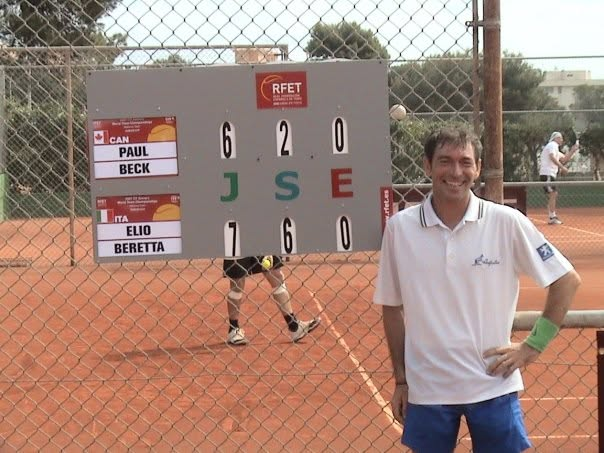

Pietro Beretta, nato il 27 ottobre 1996, è attualmente Maestro Nazionale e in precedenza ha raggiunto la sua miglior classifica di 2.5 FITP. Sta attualmente competendo per ottenere i suoi primi punti ATP in doppio.

Elio Beretta, nato nel 1964, è attualmente il dirigente a capo dell'ASD Hello Tennis. Anche lui con la qualifica di Maestro Nazionale, partecipa ai campionati over in Italia e nel circuito internazionale ITF Senior.